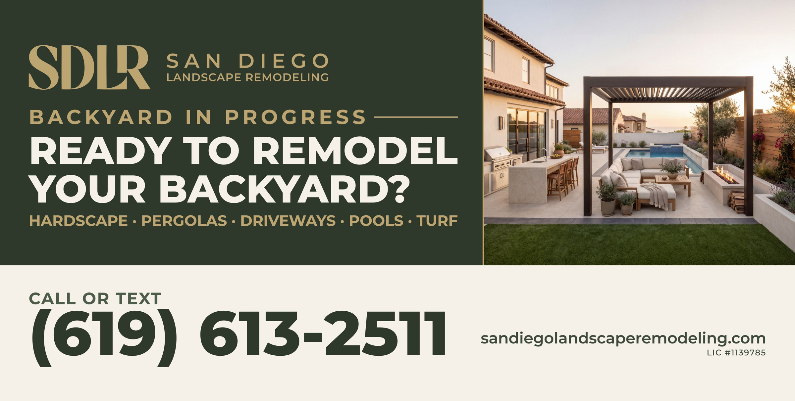
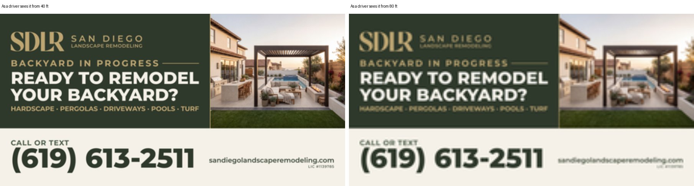
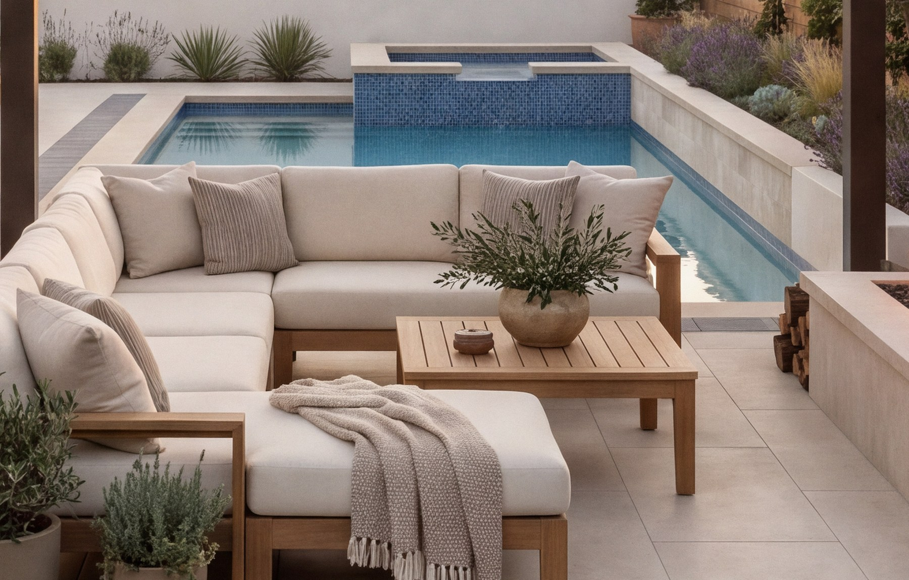
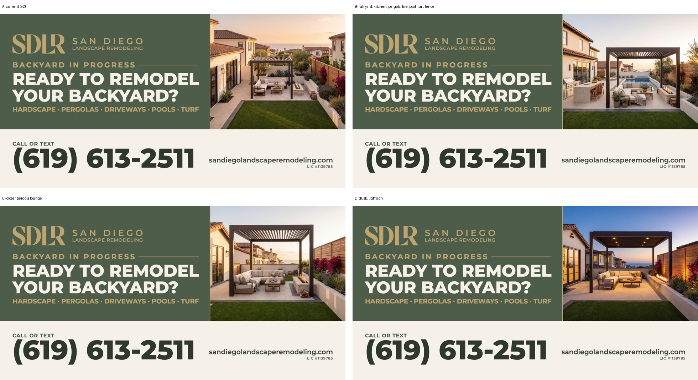

San Diego Landscape Remodeling · Fence banner · Version 3
The full backyard, built to be read from the road
The jobsite banner with a better photograph and the lettering tuned for drivers.
The photo now sells the whole yard (outdoor kitchen, pergola lounge, fire pit, pool and spa, turf, cedar fence and planting), so the pool is one feature among many.

Print this8 × 4 ft, the final.
What changed from version 2
New photograph. Picked from six new 4K Magnific images (below): the full yard reads from the road because the pergola is large and centered, and it shows more of what SDLR sells than any other option. Upscaled 2× in Magnific Precision (photo mode): about 229 dpi across the panel.
Darker green field (sage-800). On the lighter sage, the gold lines measured 2.9:1 contrast, below the 3:1 minimum for large text. On sage-800 they are 5.1:1, and the cream headline goes from 6.2:1 to 10.9:1. This is the brand guide's own rule for gold type.
Bigger "Backyard in progress" (letters 1.7 in tall, was 1.4) and bigger "Call or text" (1.4 in, was 1.0).
From the road

Simulated for a driver's glance (about 20/30 vision). At 80 ft the phone number, the headline and "Backyard in progress" still read; the services and website are for people walking or stopped at the light.
Up close

At print resolution, about 13 × 8 inches of the banner.
The photos considered

A: version 2's yard. B: the full yard (chosen). C: a closer pergola lounge. D: dusk with the lights on.
How big the words print (8 × 4 ft)
Phone number
Capital letters 5.3 in tall. Reads comfortably from about 50 ft.
Headline
3.3 in. Reads from about 33 ft.
Backyard in progress
1.7 in.
Call or text
1.4 in.
Services, website
1.3 in. Walking past.
Print spec
Finished size
96 × 48 in (8 × 4 ft). A 96 × 60 in (8 × 5 ft) file is also ready in Drive.
File
PDF, 97 × 49 in: 0.5 in of bleed on every side. Type and logo are vector, fonts embedded; the photo is embedded at 8688 × 7424 px.
Material
Mesh vinyl (wind on a fence), hemmed edges, grommets every 2 ft, zip-tied to the fence.
Colors
Sage-800 #2E382B, sage #4E5D4A, gold #BDA572, paper #F5F1E8. No Pantone numbers yet: ask for a printed proof and check the greens do not go grey or the gold brassy.
The 8 × 5 ft PDF, 100 dpi PNGs, the full-size photo and the generator are in Drive under
02 Clients/san-diego-landscape-remodeling/assets/print-ready/fence-banner/.